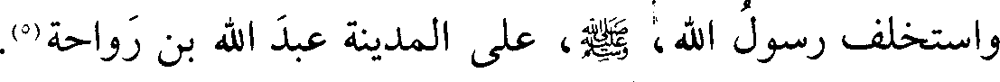
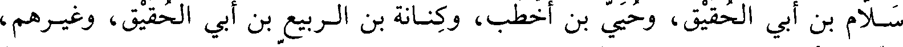
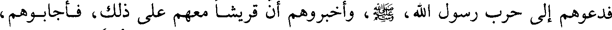

File: 000510.gt.txt (if the image is defective, simply delete all Arabic text and the line will be excluded)

واستخلف رسول الله صعلم على المدينة عبد الله بن رواحة
File: 000511.gt.txt (if the image is defective, simply delete all Arabic text and the line will be excluded)
الأحداث في السنة الخامسة من الهجرة
File: 000512.gt.txt (if the image is defective, simply delete all Arabic text and the line will be excluded)

فيها تزوج رسول الله صعلم زينب بنت جحش وهي ابنة عمته كان زوجها
File: 000513.gt.txt (if the image is defective, simply delete all Arabic text and the line will be excluded)
مولاه زيد بن حارثة وكان يقال له زيد بن محمد فخرج رسول الله صعلم يريده وعلى
File: 000514.gt.txt (if the image is defective, simply delete all Arabic text and the line will be excluded)

الباب ستر من شعر فرفعته الريح فرآها وهي حاسرة فأعجبته وكرهت إلى زيد فلم
File: 000515.gt.txt (if the image is defective, simply delete all Arabic text and the line will be excluded)
يستطع أن يقربها فجاء إلى النبي صعلم فأخبره فقال أرابك فيها شيء قال لا
File: 000516.gt.txt (if the image is defective, simply delete all Arabic text and the line will be excluded)
والله فقال له رسول الله صعلم ( أمسك عليك زوجك واتق الله ) ففارقها زيد
File: 000517.gt.txt (if the image is defective, simply delete all Arabic text and the line will be excluded)

وحلت وأنزل الوحي على النبي صعلم فقال من يبشر زينب إن الله قد زوجنيها وقرأ
File: 000518.gt.txt (if the image is defective, simply delete all Arabic text and the line will be excluded)

عليهم قوله تعالى ( وإذ تقول للذي أنعم الله عليه )(3)الآية فكانت زينب تفخر على
File: 000519.gt.txt (if the image is defective, simply delete all Arabic text and the line will be excluded)

نسائه وتقول زوجكن أهلوكن وزوجني الله من السماء(4
File: 000520.gt.txt (if the image is defective, simply delete all Arabic text and the line will be excluded)

وفيها كانت غزوة دومة الجندل في ربيع الأول وسببها أنه بلغ النبي صعلم أن بها
File: 000521.gt.txt (if the image is defective, simply delete all Arabic text and the line will be excluded)
جمعا من المشركين فغزاهم فلم يلق كيدا وخلف على المدينة سباع بن عرفطة
File: 000522.gt.txt (if the image is defective, simply delete all Arabic text and the line will be excluded)
الغفاري وغنم المسلمون إبلا وغنما وجدت لهم(4
File: 000523.gt.txt (if the image is defective, simply delete all Arabic text and the line will be excluded)
وماتت أم سعد بن عبادة وسعد مع النبي صعلم في هذه الغزاة
File: 000524.gt.txt (if the image is defective, simply delete all Arabic text and the line will be excluded)
وفيها وادع رسول الله صعلم عيينة بن حصن الفزاري [أن يرعى بتغلمين(5) وما
File: 000525.gt.txt (if the image is defective, simply delete all Arabic text and the line will be excluded)
والاها
File: 000526.gt.txt (if the image is defective, simply delete all Arabic text and the line will be excluded)

(عيينة بضم العين تصغير عين)
File: 000527.gt.txt (if the image is defective, simply delete all Arabic text and the line will be excluded)

ذكر غزوة الخندق وهي غزوة الأحزاب(1
File: 000528.gt.txt (if the image is defective, simply delete all Arabic text and the line will be excluded)
وكانت في شوال وكان سببها أن نفرا من يهود من بني النضير منهم عبد الله بن
File: 000529.gt.txt (if the image is defective, simply delete all Arabic text and the line will be excluded)

سلام بن أبي الحقيق وحيي بن أخطب وكنانة بن الربيع بن أبي الحقيق وغيرهم
File: 000530.gt.txt (if the image is defective, simply delete all Arabic text and the line will be excluded)
حزبوا الأحزاب على رسول الله صعلم فقدموا على قريش بمكة فدعوهم إلى حرب رسول
File: 000531.gt.txt (if the image is defective, simply delete all Arabic text and the line will be excluded)
الله صعلم وقالوا نكون معكم حتى نستأصله فأجابوهم إلى ذلك ثم أتوا على غطفان
File: 000532.gt.txt (if the image is defective, simply delete all Arabic text and the line will be excluded)

فدعوهم إلى حرب رسول الله صعلم وأخبروهم أن قريشا معهم على ذلك فأجابوهم
File: 000533.gt.txt (if the image is defective, simply delete all Arabic text and the line will be excluded)
فخرجت قريش وقائدها أبو سفيان بن حرب وخرجت غطفان وقائدها عيينة بن حصن في
File: 000534.gt.txt (if the image is defective, simply delete all Arabic text and the line will be excluded)
بني فزارة والحارث بن عوف بن أبي حارثة المري في مرة ومسعر بن رخيلة الأشجعي
File: 000535.gt.txt (if the image is defective, simply delete all Arabic text and the line will be excluded)
في أشجع
File: 000536.gt.txt (if the image is defective, simply delete all Arabic text and the line will be excluded)
فلما سمع بهم رسول الله صعلم أمر بحفر الخندق وأشار به سلمان الفارسي
File: 000537.gt.txt (if the image is defective, simply delete all Arabic text and the line will be excluded)

وكان أول مشهد شهده مع رسول الله صعلم وهو يومئذ حر فعمل فيه رسول الله صعلم
File: 000538.gt.txt (if the image is defective, simply delete all Arabic text and the line will be excluded)
رغبة في الأجر وحثا للمسلمين وتسلل عنه جماعة من المنافقين بغير علم رسول الله
File: 000539.gt.txt (if the image is defective, simply delete all Arabic text and the line will be excluded)

صعلم فأنزل الله في ذلك ( قد يعلم الله الذين يتسللون منكم لواذا )(2)الآية